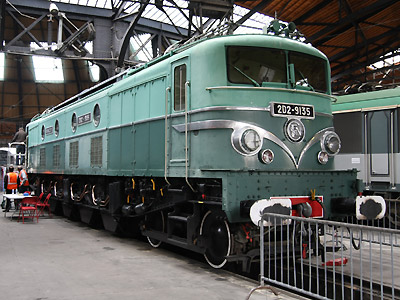

Ferrovia - 01 Novembre 2012
2D2 9100
Machines de vitesse mises en service par la SNCF suite à l'électrification de la ligne Paris-Lyon pour la traction des trains de voyageurs, les trains de marchandises étant confiés aux BB 8100.
Compte tenu du besoin impérieux de rééquiper au plus vite le parc de locomotives éprouvé par la guerre mondiale, ces machines avaient une disposition mécanique proche des 2D2 5500 et 5400 conçues de la fin des années 1920 aux années 1930. Un chassis rigide emportant les quatre moteurs de traction transmettant l'effort aux essieux moteurs par une transmission Buchli. deux bissels à deux essieux guident de part et d'autre la machine.
Les immenses progrès technologiques de l'époque les ont vite reléguées à un second plan derrière les CC 7100 et BB 9200.
Machines remarquables de la série
9135 : Machine préservée à Laroche-Migennes en cours de restauration.
Pour plus d'info :
la fiche 2D2 9100 sur Wikipedia
l'inventaire des 2D2 9100 sur Trains du Sud-Ouest

La 2D2 9135 exposée sous la rotonde de Chambéry (18/09/2010)